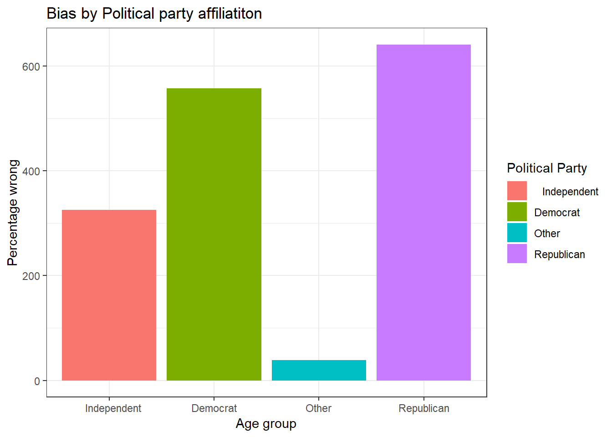
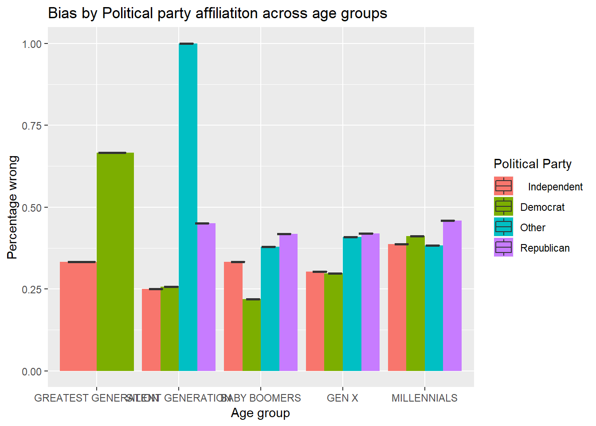

Write your blog post here.
# load the required libraries
library(readr)
library(tidyverse)
library(ggplot2)
library(dplyr)
library(leaflet)
library(maps)
library(sf)
# import datasets
headline_responses <- read_csv("headline-responses.csv")
#View(headline_responses)
raw_data <- read_csv("raw-data.csv")
#View(raw_data)# select the needed columns
raw_data0 <- raw_data %>%
select(ID, HCAL_REGION1_Label_US, HADD_ZipCode_US, HCAL_AGGLO_CODE_US, HCAL_AGGLO_CODE_Label_US, HCAL_STDREGION_4CODES_Label_US, DP_ETHNICITY_BAN, resp_gender,resp_age,US09KID,CurrentYear, DWD4, DWD5, GRID_DWD9_1_DWD9, GRID_DWD9_5_DWD9, DWD10,DWD1,DWD5)
#View(raw_data0)
# join the 2 datasets
joined_data <- headline_responses %>%
inner_join(raw_data0, by = "ID")
#View(raw_data)combined1<-joined_data%>%
filter(recalled == "yes") %>%
#rename DWD1 to Political Party
mutate(political_party=as.factor(DWD1))%>%
select(ID, headline, accuracy_bool, is_fake, HCAL_REGION1_Label_US, resp_age,political_party,DWD5,GRID_DWD9_1_DWD9) %>%
#Calculate the percentage of wrong responses
mutate(wrong_or_not = ifelse(accuracy_bool == is_fake, 1, 0)) %>%
group_by(ID) %>%
mutate(wrong_count = sum(wrong_or_not),
total = n(),
percentage_wrong = wrong_count/total)%>%
#determine the different age groups
mutate(age_group= ifelse(resp_age> 91, "GREATEST GENERATION",
ifelse(resp_age>72, "SILENT GENERATION",
ifelse(resp_age>53,"BABY BOOMERS", ifelse(resp_age>37,"GEN X","MILLENNIALS"
)))))%>%
#Recode political party values to correspond to party names
mutate(political_party= ifelse(political_party=="1", "Democrat",
ifelse(political_party=="2","Republican",
ifelse(political_party=="3"," Independent", "Other"))))
#View(combined1)#how bias varies generally by political party
party_count<-combined1%>%
group_by(political_party)%>%
mutate(total = n())%>%
select(political_party, total)
#View(party_count)age_count<-combined1%>%
group_by(age_group)%>%
mutate(total = n())%>%
select(age_group, total)
#View(age_count)#Calculate mean wrong responses per age group
combined_intermediate <-combined1%>%
group_by(political_party)%>%
mutate(mean_wrong=mean(percentage_wrong))
#plot of bias by political party across agegroups
ggplot((combined_intermediate), aes(x= (political_party), y=(mean_wrong), fill=as.factor(political_party))) +
geom_col() +
labs(x = "Age group", y="Percentage wrong",
title = "Bias by Political party affiliatiton",fill="Political Party")+
theme_bw()
#Calculate mean wrong responses per age group
combined2<-combined1%>%
filter(age_group=="GREATEST GENERATION")%>%
group_by(political_party)%>%
mutate(mean_wrong=mean(percentage_wrong))
#View(combined2)
combined3<-combined1%>%
filter(age_group== "SILENT GENERATION")%>%
group_by(political_party)%>%
mutate(mean_wrong=mean(percentage_wrong))
combined4<-combined1%>%
filter(age_group== "BABY BOOMERS")%>%
group_by(political_party)%>%
mutate(mean_wrong=mean(percentage_wrong))
combined5<-combined1%>%
filter(age_group== "GEN X")%>%
group_by(political_party)%>%
mutate(mean_wrong=mean(percentage_wrong))
combined6<-combined1%>%
filter(age_group== "MILLENNIALS")%>%
group_by(political_party)%>%
mutate(mean_wrong=mean(percentage_wrong))
#View(combined6)#recombine all the datasets together to incorporate mean wrong responses
#for all age groups
combined01<-full_join(combined2, combined3, by=NULL) ## Joining, by = c("ID", "headline", "accuracy_bool", "is_fake", "HCAL_REGION1_Label_US", "resp_age", "political_party", "DWD5", "GRID_DWD9_1_DWD9", "wrong_or_not", "wrong_count", "total", "percentage_wrong", "age_group", "mean_wrong")combined02<-full_join(combined01, combined4, by=NULL)## Joining, by = c("ID", "headline", "accuracy_bool", "is_fake", "HCAL_REGION1_Label_US", "resp_age", "political_party", "DWD5", "GRID_DWD9_1_DWD9", "wrong_or_not", "wrong_count", "total", "percentage_wrong", "age_group", "mean_wrong")combined03<-full_join(combined02, combined5, by=NULL)## Joining, by = c("ID", "headline", "accuracy_bool", "is_fake", "HCAL_REGION1_Label_US", "resp_age", "political_party", "DWD5", "GRID_DWD9_1_DWD9", "wrong_or_not", "wrong_count", "total", "percentage_wrong", "age_group", "mean_wrong")combined04<-full_join(combined03, combined6, by=NULL)## Joining, by = c("ID", "headline", "accuracy_bool", "is_fake", "HCAL_REGION1_Label_US", "resp_age", "political_party", "DWD5", "GRID_DWD9_1_DWD9", "wrong_or_not", "wrong_count", "total", "percentage_wrong", "age_group", "mean_wrong")#View(combined04)#So that the age groups are in the order we created them in, and not alphabetical
combined04$age_group <- as.character(combined04$age_group)
#Then turn it back into a factor with the levels in the correct order
combined04$age_group <- factor(combined04$age_group, levels=unique(combined04$age_group))
#combined04$political_party <- as.character(combined04$political_party)
#Then turn it back into a factor with the levels in the correct order
#combined04$political_party <- factor(combined04$political_party, levels=unique(combined04$political_party))#plot of bias by political party across agegroups
ggplot((combined04), aes(x= (age_group), y=(mean_wrong), fill=as.factor(political_party))) +
geom_col(position="dodge") +
geom_boxplot(aes(x=age_group, y=mean_wrong))+
#points(x = combined04$age_group, y = combined04$generation_wrong)+
#abline(h=generation_wrong)+
labs(x = "Age group", y="Percentage wrong",
title = "Bias by Political party affiliatiton across age groups",fill="Political Party")
ggplot((combined04), aes(x= (age_group), y=(mean_wrong), fill=as.factor(DWD5))) + geom_col( position=“dodge”) + labs(x = “Age group”, y=“Percentage wrong”, title = “Bias by Political party affiliatiton”,fill=“Political Party”)
```
# Visualizations